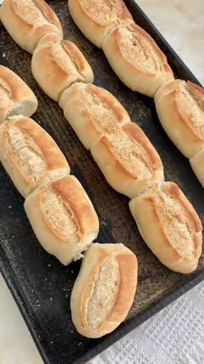
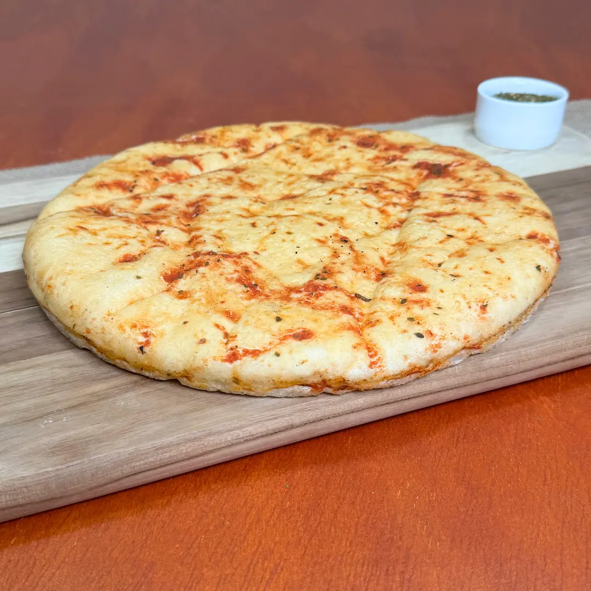
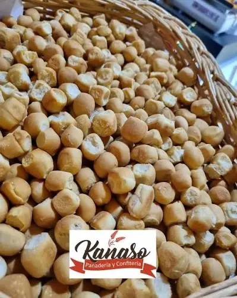
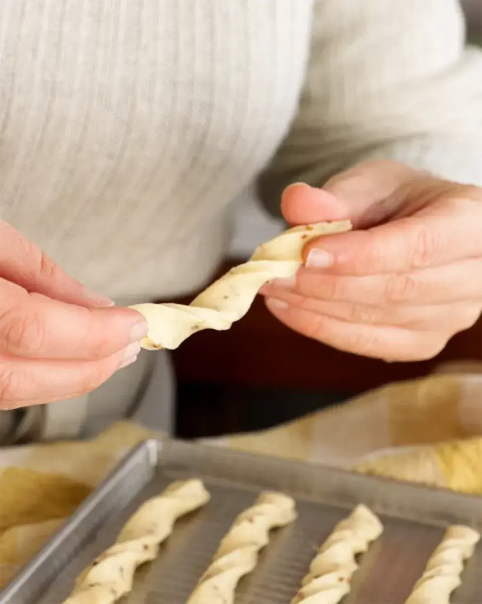
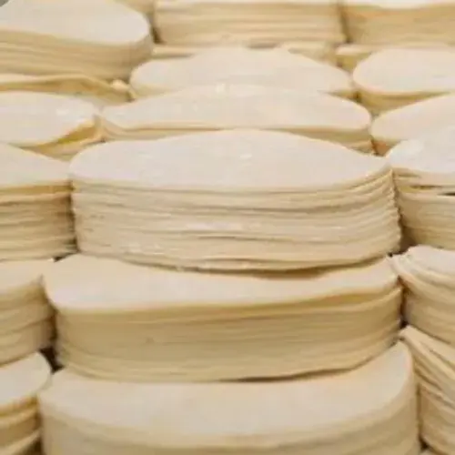

Llevamos la frescura del horno directamente a tu góndola en Oberá y zona centro.
Llevamos más de 20 años acompañando la mesa de nuestros vecinos obereños. Lo que nació como un sueño familiar hoy llega a cada rincón de nuestra zona centro.
Con presencia diaria en Campo Ramón, San Martín, Villa Bonita, Guaraní, Caayarí y muchas localidades más, trabajamos con la misma pasión del primer día.
¡Se parte vos también de nuestra historia!




